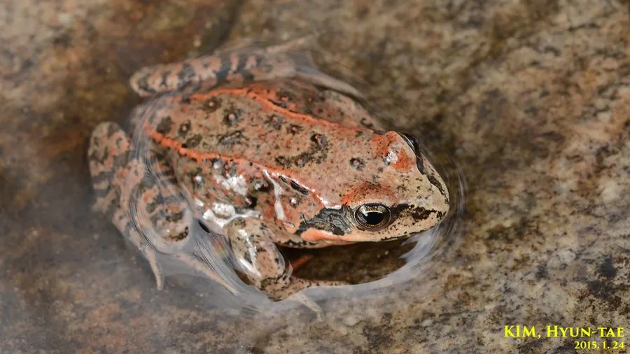

两栖动物 · 动物界
中国林蛙 Rana chensinensis

中国北方山区的蛙类，秋季入水越冬，雌蛙输卵管干制品被称为“林蛙油”，因过度捕捉而需要保护。
- 分类
- 门脊索动物门纲两栖纲目无尾目科蛙科属林蛙属
- 栖息环境
- 山地森林、灌丛、溪流、沼泽与静水水域
- 地理分布
- 中国东北、华北及西北部分地区的山地
- 保护级别
- IUCN 无危（LC）；中国“三有”保护动物
物种志
中国林蛙体长 5–8 厘米，头部扁平，吻端钝圆，背部呈黄褐、灰褐或橄榄褐色，散布深色斑点，体侧有浅色纵纹，腹部白色或淡黄色；后肢较长，趾间蹼发达，善跳跃和游泳。秋季它会在河流、池塘中越冬，冬季可在冰下活动，这是它适应北方寒冷气候的重要习性。
它分布于中国东北、华北及西北部分地区，栖息于山地森林、灌丛、溪流和沼泽，成虫多在林下捕食昆虫、蠕虫和蜘蛛，繁殖期回到静水水域。每年 3–5 月繁殖，雌蛙产卵约 1000–2000 枚，约 1–2 周孵化，蝌蚪经 2 个月左右变态。雌蛙的输卵管干制品即“林蛙油”，被视为滋补品，长期过度捕捉使野生种群数量下降，它已被列入中国“三有”保护动物名录，捕捉野生个体需遵守相关规定。
形态与习性
- 食性昆虫、蠕虫、蜘蛛和小型无脊椎动物
- 体长5–8 cm
- 寿命约 5–8 年
- 繁殖卵生，每次约 1000–2000 枚，约 1–2 周孵化
- 活动节律夜行性，秋季入水越冬
- 经济价值雌蛙输卵管干制品称“林蛙油”
趣味知识
- 中国林蛙秋季进入河流和池塘越冬，能在冰下活动。
- 雌蛙输卵管干制品俗称“林蛙油”，长期被作为滋补品使用。
- 中国林蛙已被列入“三有”保护动物名录，捕捉野生个体需谨慎。